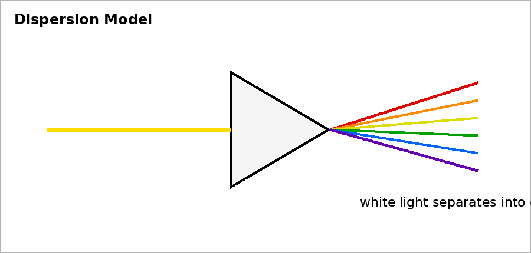

Unit 6 DOK 4.1 Build an Optical Path Model V1
Name:
Version 1
Show work and mark answers clearly.
An observer looks at a coin under water from above the surface.
- Describe the path light takes from coin to eye.
- Explain where refraction occurs.
- Explain why the coin appears shifted.
- Build a corrected optical-path model in words or a sketch description.
Unit 6 DOK 4.1 Build an Optical Path Model V2
Name:
Version 2
Show work and mark answers clearly.
A person sees an object using a plane mirror around a corner.
- Identify the light source and object path.
- Explain reflection at the mirror.
- Describe where the virtual image appears.
- Defend your model using the law of reflection.
Unit 6 DOK 4.1 Build an Optical Path Model V3
Name:
Version 3
Show work and mark answers clearly.
A ray passes through a glass block and exits into air.
- Describe bending at each boundary.
- Explain how speed changes at each boundary.
- Predict whether the final ray is parallel to the original path for a rectangular block.
Unit 6 DOK 4.1 Build an Optical Path Model V4
Name:
Version 4
Show work and mark answers clearly.

A prism sends different colors toward different spots on a screen.
- Build a model of the light path.
- Explain why colors separate.
- Describe evidence that supports dispersion.
Unit 6 DOK 4.1 Build an Optical Path Model V5
Name:
Version 5
Show work and mark answers clearly.

A lens forms a real image on a screen.
- Trace how rays from the object reach the image.
- Explain why the image can be projected.
- Describe what would change if the object moved closer to the lens.
Unit 6 DOK 4.1 Build an Optical Path Model V6
Name:
Version 6
Show work and mark answers clearly.
A museum display uses glass, a mirror, and a lens. Visitors see glare and a shifted image.
- Identify at least two optical behaviors in the system.
- Build a ray-path explanation for what visitors see.
- Propose one improvement and defend it.